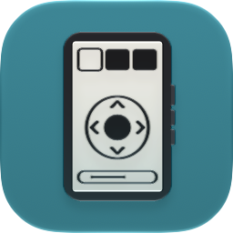

Turn a reTerminal Sticky into a remote for your player and lights, with Home Assistant.
Everything runs in this page, on your computer. Your Wi-Fi password goes only to your Sticky, your Home Assistant token only to your Home Assistant. Nothing you enter is sent to this website or its author.